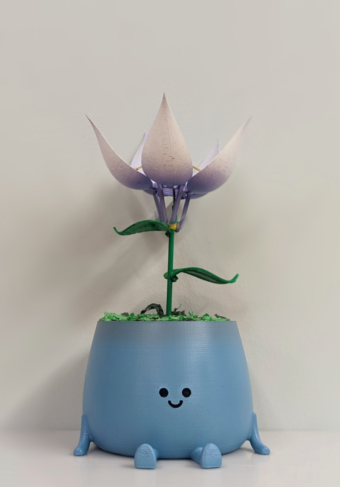

//NAVBAR//
Raphaelle Lepere
Home
Portfolio
About
Student Projects
Tiki the Conservation Plant

A toy designed to teach children to favor natural light rather than turning on artificial lights. Tiki's flower blooms when it senses natural sunlight, and closes when it senses artificial light.